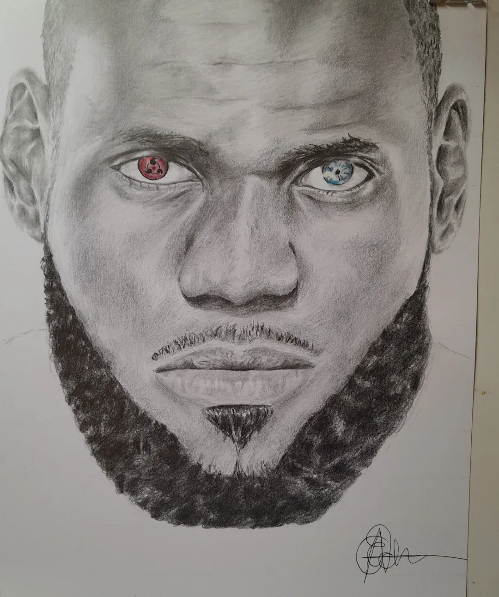
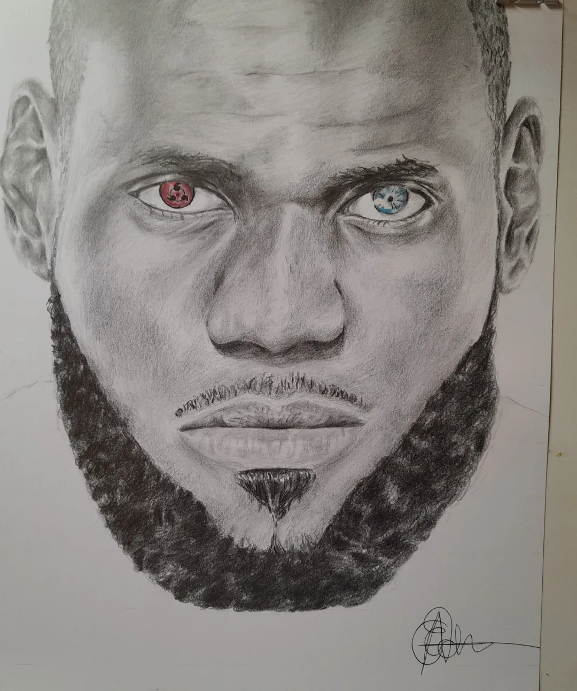

Hello! I'm Gabriel, and this is a brief introduction about myself. I am an artist who happens to specialise in Data Analysis.
I definetely have a strong passion for my Art especially if we are talking about acrylic painting-(we will get into that shortly); But my true passion and focus is Data Analysis.

In my free time, you can often find me watching sporting documentaries like the "The Last Dance" because that is honestly the best place to find real motivation and inspiration. If you have not
watched the Michael jordan famous Last Dance you have great things waiting for you when you press play. (Side note I am a very good sales man)
Art is my way of navigating the world, an avenue where I breathe life into my thoughts and emotions. It's more than just strokes on a canvas or shapes sculpted from clay; it's a means of expression that transcends language.
For me, art is a language in itself—a profound way to communicate ideas, emotions, and stories that words alone struggle to convey. It allows me to delve into the depths of my imagination and extract fragments of my inner world, translating them into tangible forms that others can see, feel, and interpret.
Creating art isn't merely a hobby; it's an essential part of my existence. It's a sanctuary where I find solace, a canvas where I paint my dreams and fears, and a medium through which I explore the complexities of the human experience. Whether through colors, shapes, or textures, I strive to capture moments, evoke emotions, and provoke thought.
Art grants me the freedom to express myself authentically, to challenge norms, and to inspire change. It's a continuous journey of self-discovery, allowing me to embrace vulnerability and celebrate individuality. Through art, I aim to connect with others on a profound level, fostering empathy, sparking conversations, and leaving an indelible mark on the world—a testament to the human spirit's boundless creativity.
Here is the most important Part --- Yes Data Analysis
Coding and DataAnalysis are my modern-day canvases, where I paint with pixels and breathe life into ideas through lines of code. The allure of this digital realm lies in its creative possibilities, akin to the way an artist wields a brush to craft a masterpiece.
What draws me into coding is the ability to build something tangible from the intangible, just as an artist sculpts from a formless block of clay. Through code, I mold intricate designs, sculpt seamless user experiences, and weave functionality into existence. It's a blend of logic and creativity, where problem-solving meets artistic expression.
Data Analysis, in particular, echoes the art of storytelling. Similar to how an artist narrates a tale through visuals, a web developer orchestrates an immersive journey through layouts, animations, and interactions. Crafting a visually appealling analytical report is akin to curating an exhibition, where each element plays a role in shaping the visitor's experience—a harmony of aesthetics and functionality.
In both coding and art, the process itself is a journey of exploration and discovery. The thrill of seeing lines of code materialize into a functioning Dashboard mirrors the exhilaration an artist feels when their vision takes form on the canvas. It's about pushing boundaries, embracing innovation, and continually evolving—an endless quest for perfection in an ever-changing landscape.
Ultimately Data Analysis is my means of artistic expression in the digital age—a fusion of creativity and technology that empowers me to craft immersive experiences, evoke emotions, and leave a lasting impact, much like an artist's masterpiece resonates with its audience long after the first glance.

 
